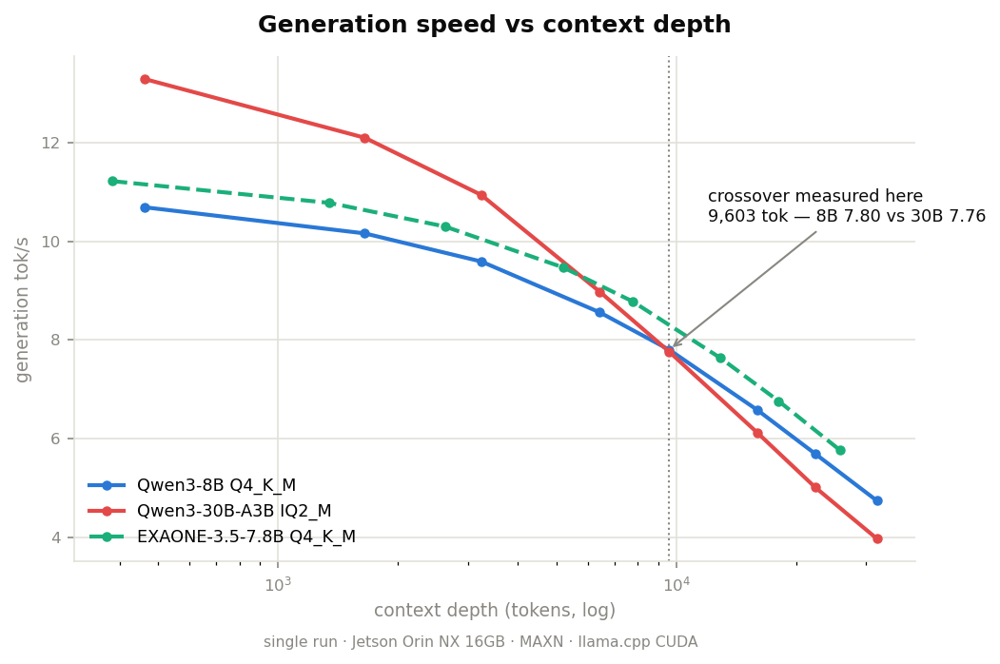
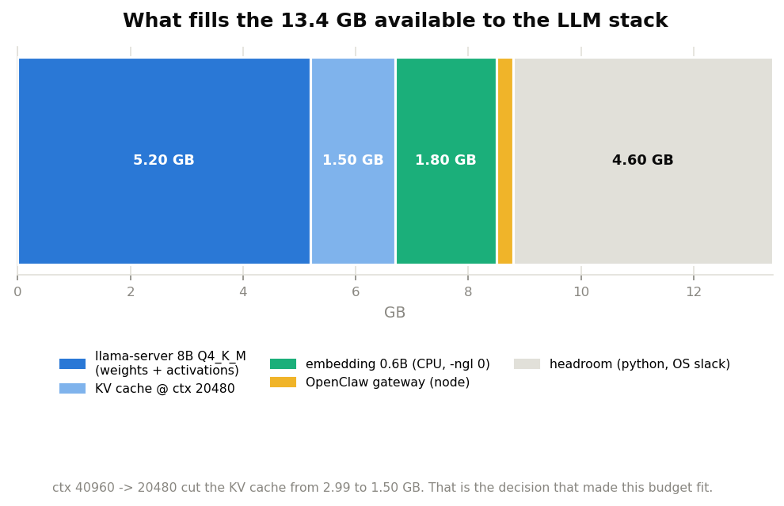

Jetson 온디바이스 LLM 개인 비서
Jetson Orin NX 16GB에서 모델 구성 13개를 직접 측정하고, 그 결과로 고른 Qwen3-8B 위에 개인 비서를 만들었습니다. PC와 휴대폰 활동을 10분 단위로 모으고, 질문을 받으면 도구로 실제 기록을 찾아본 뒤 그 기록을 근거로 Slack에서 답합니다.
구조
모델 선택: 스펙이 아니라 측정으로
| 측정 | Qwen3-8B | Qwen3-30B-A3B | EXAONE 3.5 7.8B |
|---|---|---|---|
| 도구 호출 6케이스 | 6/6 | 4/6 | 도구 호출 미지원 |
| 32K 문맥 서버 메모리 | 8,606 MB | 12,925 MB | – |
| 약 9,600 토큰 생성 속도 | 7.80 tok/s | 7.76 tok/s | – |
속도와 메모리는 MAXN 모드, llama.cpp로 실측했습니다. 13개 구성 중 최종 후보 3개만 도구 호출을 시험했습니다. 처음에는 30B를 기본으로 정했다가 도구 호출 결과를 보고 8B로 바꿨습니다.


운영하며 고친 것
2026-08-17부터 09-08까지 장애와 판단 기록 65건을 남겼습니다. 그중 세 가지입니다.
상태 점검이 이틀 동안 정상이라고 했다
새벽 야간 배치가 모델 로딩 중의 503 응답을 영구 오류로 처리해 277건이 실패했고 성공률은 71%였습니다. 그런데 상태 점검은 이틀 동안 정상으로 표시했습니다. 503·502·504·429를 일시 장애로 다시 분류하고, 점검 기준을 실패율로 바꿨습니다.
묻지 않은 개인 발화가 외부 검색 API로 나갔다
검색 API 대시보드에서 묻지 않은 개인 발화가 30여 회 나간 것을 직접 발견했습니다. 게이트는 원문을 검사했는데, 그 뒤에서 다시 조립한 문자열이 나간 것이 원인이었습니다. 발송 직전에 다시 검사하게 고치고 회귀 테스트 5개를 붙였습니다.
메모리 부족으로 서버가 죽었다
전역 OOM으로 8B 서버가 종료됐고 스왑은 97.8%였습니다. 전날 한 시점의 스냅숏만 보고 "문제없다"고 판단한 것이 틀렸습니다. 매일 아침 서버를 재기동하는 타이머를 넣었습니다.
한계
- 가동률은 따로 측정하지 않았습니다.
- 운영 기록은 2026-09 초까지입니다.
사용 기술
Jetson Orin NX 16GB, llama.cpp, Qwen3-8B, MCP, SQLite, systemd, Slack, Tailscale. 휴대폰 수집 앱은 ActivityWatch Android를 고친 LT Phone입니다.